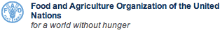

|  |

|
Aquatic Species Distribution Map Viewer |
Select species to view on the map
Select one or more species, type to quick filter by species name.
Species quick filter:
Available species in distribution maps: .
For criteria and procedures used for the compilation of the Aquatic Species Distribution Maps, click here.
Disclaimer: The designations employed and the presentation of material in the map(s) are for illustration only and do not imply the expression of any opinion whatsoever on the part of FAO concerning the legal or constitutional status of any country, territory or sea area, or concerning the delimitation of frontiers or boundaries.
powered by
FIGIS
© FAO, 2011